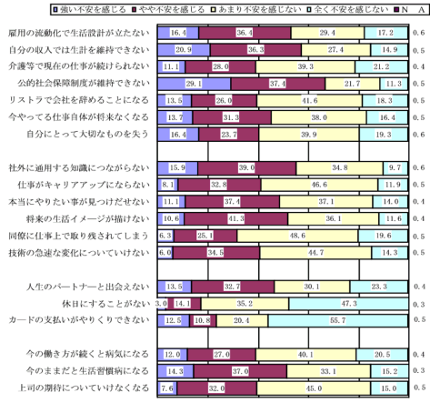
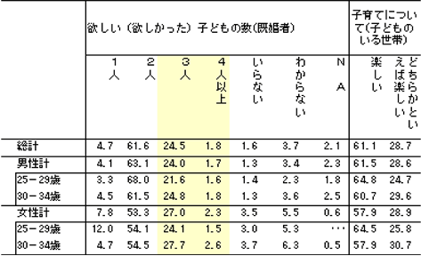

記者発表資料 目次
PDF版（77KB)もあります。
仕事や生活に関する諸制度の見直し、その再構築が進められているなかで、勤労者、とりわけ若い人たちにとっては、親の世代とは異なった生活設計が求められている。
本共同調査は、生活設計を検討するための資料を得ることを目的として、若者（34歳以下）のライフスタイルに関連した仕事や生活の現状、意見や評価、要望などを尋ねた。
調査実施の時期は2003年11月～2004年２月で、参加組合は14単産・単組の１万人である。今回報告する共同調査用サンプルは、民間・公務、年齢などを調整して抽出した5,165人である（なお、本報告は本年の秋を予定している）。
参加組合：UＩゼンセン同盟、電機連合、基幹労連、ゴム労連、ＪＥＣ連合、化学総連、 私鉄総連、運輸労連都連、サービス・流通連合、ＮＴＴ労組、国公総連、全逓、自治労、日教組
本調査の主たる対象者は、都市部に住む大企業で働く高学歴層のホワイトカラー層で、その多くは就職活動をし、本人が希望する勤務先に就職できた人たちである。親は団塊の世代とその前後の世代である。
－構造改革、リストラ下で、働き方や暮らし方に強い不安－
これからの生活設計に関連した課題への不安が顕在化している。特に、公的年金の制度維持不安は67％、本人収入のみでの生計維持不安については57％、雇用流動化での生活設計不安は53％の人があげている。また、私生活のなかで未婚者の２人に1人はパートナー探しに不安を感じており、カードやキャッシングの支払いに不安を感じている人は４人に１人で少なくない（第Ⅰ－１図）。
若者は「勤務先は従業員の雇用に責任がある」について、ほとんどの人が＜そう思う＞（91％）に回答している。同時に、「能力を身につけるのは個人の責任」（同：78％）と考えおり、「成果などで減給や降格もやむをえない」（同：68％）や「大胆な抜擢人事を行って欲しい」（同：67％）にみられるように「応能処遇」への期待が強い（第Ⅱ－３図）。
－若者は疲れている－
今回、調査の対象になった人はホワイトが多いが、普段の仕事はチーム作業で、困ったときには上司や同僚の助けがある。孤立・無援で仕事をしているわけではない。
男性（民間・通常勤務とフレックス勤務のケース）は８時過ぎから仕事を始め、勤務先を出るのは７時半である。勤務時間は長く、いわゆる「９時５時」生活とはかけ離れている。職場にいる時間は11時間16分と長い。若者の即戦力化が影響している。
若者は日常の生活のなかで疲れ、不安やイライラ感、仕事や人間関係にストレスを感じている（第Ⅰ－３図）。そしてこのような生活が続くと「生活習慣病になる」不安は半数の人が、また「今の働き方が続くと病気になる」不安を４割の人が持っている（第Ⅰ－1図）。

このような不安がある反面、大卒以上の事務・営業系と技術系は、高卒技能系と比べ、雇用の安定よりはやりがい、新しい仕事へチャレンジしたい、好きな仕事のためなら労働時間が長くなっても仕方がないという考えの人が多く、職種により働き方についての考え方に違いがある。
とはいえ、「時間をかければ成果がでる」と考えている人は４割にとどまっている。応能処遇への強い期待のもとで、現実の人事評価に納得している人は４割弱、若者が人材として育てられていると実感できている人は３割台でしかない。
ただ、女性の活用については男性の肯定が四分の一と少ないのに対し、女性では４割を超えており、より好意的にみている人の多い（第Ⅰ－４図）。
－高い転職意識－
今の勤務先での継続勤務を考えている人は６割、転職志向の人は２割弱である。このようななかで大卒の26～27歳では「機会があれば転職したい」が33％、「将来は会社を起こしたい」が５～８％で、企業外を視野に入れた職業生活を考えている人が４割いる（第Ⅱ－４表）。
－母親世代が「自立」のため願った女性のフルタイム志向は４割にとどまる－
70年代の夫婦の関係は役割分業であった。稼ぎ手は夫、妻は専業主婦として家を守ることが期待された。この点について、男性は従来型の継続、しかし女性は従来型への「回帰」がみられる。
男性は妻に「家庭責任」を期待し、現実もそのようになっているし、そうなることを期待しているが、女性の場合、理想は夫婦ともフルタイム（43％）がトップとはいえ半数を切り、自分はパート（23％）や家事（13％）を合わせると４割に近づく。母親の世代で「自立」を目指した人たちにとって、フルタイムで働き続けることは重要な要件になっていたが、女性の職場での活用が進んでいる今日、娘の世代は必ずしもそれに執着していないようである。現実（未婚者の場合は「なりそうな現実」をも含めて）は、生活水準は落とせないということもあってか、「夫婦ともフルタイム」（６割）が多い。女性で理想と現実との乖離が大きいことになる。
－高い親との同居・近居率、親離れ・子離れ、子育てや介護など生活課題の共有・共助化が高まる－
男性・34歳以下の既婚者と結婚者の構成は半々、30代前半でみた未婚率は男性では３割強、女性では半数を超える。未婚者のうち７割以上が「結婚したい」と考えているが、（未婚）女性の30代前半では結婚にこだわらず「パートナーを持ちたい」人が増え四分の一を占める。
若者は親の世帯と近い距離で生活している。親との同居に近居を合わせると、男性の24歳以下では48％、20代後半では36％に減るが、30代前半になると46％へ再び増える。団塊の世代とその前後の世代は、勉学や職を求めて親元を離れた人たちであったが、（長男・長女の）今の若者は、親と生活圏をともにしている人たちが多いようである。親離れ・子離れの問題と子育てや介護など双方の生活課題を共有・共助する可能性が高い。
－子育ては楽しい－
欲しい子どもの数は、最も多いのは２人（62％）であるが３人（25％）も四分の一いる。子どものいる世帯に尋ねた子育て感は、子どもが幼少段階という条件付とはいえ、＜楽しい（楽しかった）＞が９割を超えている。

－大切なのは職場と家庭、自由時間とのバランス－
出世よりも家庭を大切にしたい人は８割、収入よりは自由時間を大切にしたい人も半数を超えている。職場と家庭、自由時間とのバランスが大切ということになる。そこで、両立支援策を尋ねたところ労働時間と休日休暇、そして世帯の形成から子育て期が多いことが反映してか保育施設の拡充が念頭に置かれている。なお、収入と支出の双方を落としてでも自分らしい生活をしたいという、いわゆる「ダウンシフター」も５人に一人いる。
－大切なのは友達と居場所探し－
若者が重要と考えているのは、自分の目標を持つことであり、友人や知人、とりわけ、悩み事を相談できる人を持ち仕事関係以外の友人や知人をつくることである。また、仕事以外の豊かな教養の習得や自分の居場所探しが重視されている。これらに比べると、新しいことへの挑戦や社会貢献活動を最重視する人は少ない（第Ⅰ－５図）。